Spotted Gum F17
MPa
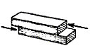
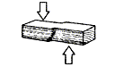

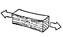
8.6
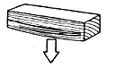
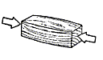
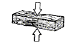
COPYRIGHT Tim Lovett © Mar 2004
.
.
.
|
BOLTS ARE OUT...
A bolted truss structure of a rail trestle. An essential ingredient of the industrial revolution, bolts are effectively absent in ancient cultures. Appendix 1
Threaded bolts are disqualified from Noah's Ark.
|
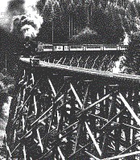 |
This gives the following options for the joining of large timbers;
1. MORTISE AND TENON - Timber Dowels
|
Mortise and tenon joints pinned together with timber dowels. This simple joint uses the most basic materials and is the oldest method of building wooden structures, dating back at least to the early Greeks. It remained the primary method until the development of stick framing in the 1800's. |
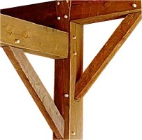 |
Drilling round holes in timber was never a problem in antiquity. (The ancient Egyptians even drilled granite - very well.)
But how strong is this joint? A simple calculation might give us a clue. The recommended maximum tenon is 1/3 of thickness.
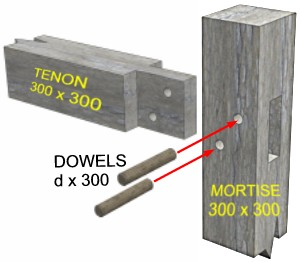
Assume beams in Douglas Fir (Pseudotsuga menziesii) and dowels in a hardwood such as a Eucalypt. (Coryumbia citrodora)
Summary of typical allowable stresses for some common sample timbers. (Ref Appendix 2). These values are conservative.
| Data | Data | Douglas Fir F8 MPa |
Spotted Gum F17 MPa |
 |
Shear Strength (parallel to grain) | 1 | |
 |
Shear Stress (perp to grain) | 2 | |
|
Shear Stress (rolling 20% of parallel) | 0.5 | |
 |
Tensile Strength (parallel to grain) |
8.6
|
17 |
 |
Tensile Strength (perp to grain) | 2.3 | |
 |
Comp Strength (parallel to grain) | 6.6 | 13 |
 |
Comp Strength (perp to grain) | 1.6 | 5.2 |
| Bending Strength (typ. between tensile and comp) | 8 | 17 |
|
Efficiency of a dowelled mortise and tenon joint statically loaded in tension. We will ignore the perpendicular tensile failure leading to peel fracture of the mortised beam (which assumes the mortise is not too close to the end of the beam, and dowels are sufficiently deep into the beam). We will then consider the shearing of tenon or dowels - the controlling factor being dowel diameter. Only for large diameter or quantity of dowels is there potential for parallel tensile failure of the tenon. Shear of Tenon (Assume dowels symmetrical about mortise beam centre - 150mm from end ) Area of Shear = L * t * 4 = 150 * 100 * 4 = 60e3 mm2 Load (N) = Stress * Area = 1 * 60e3 = 60 k N (about 6 tonnes) To match the dowel diameter, (two dowels each in double shear) we need enough area to handle 6 / 4 = 1.5 tonnes per cross-section. Assume shear strength = 2Mpa, then Area = load / stress = 15e3 / 2 = 7.5e3 mm2, so diam = 50mm, which is reasonable. Check crushing of tenon hole: Area = d * t = 50 * 100 = 5e3mm2 Compressive strength = 6.6MPa, so Load (N) = 6.6 * 5e3 * 2 = 66kN (OK) Check tension of mortise hole: Area = d * t * 2 = 10e3mm2 Perp Tensile strength = 2.3 MPa, so Load (N) = 2.3 * 10e3 * 2 = 46kN (Failure mode) To find "joint efficiency", compare with the tensile capacity of beam: Load = Stress * Area = 8.6 * 300^2 = 774 kN ( about 300 tonnes) Efficiency = 46 / 774 = 6% This design is not far from optimum because the 3 failure modes have fairly similar values. Alternative approach. (Double check) The revival of traditional heavy timber frame construction in the US has led manufacturers to come up with joint solutions (Appendix 3). This joint is specified as 5 to 10 times stronger in tension than traditional mortise and tenon joints. The tensile force of 41.8kN is listed for 8"x 8" (200x200mm) Douglas Fir. At this size, the timber post could handle a tension of; Load(N) = 8.6 * 200^2 = 344kN. So 'joint efficiency' = 41.8 / 344 = 12% Which, by implication, means the mortise and tenon joint has an efficiency of only 12 / 5 = 2.4%. (Lower than previous calculation, but certainly in the ball park) This explains why standard roof trusses are not joined with a pinned mortise and tenon joint. Nail plates (gang nails) are a lot better than this. So dowelled mortise and tenon can only transfer approximately 4% of the tensile capacity of a timber post. |
2. MORTISE AND TENON - Glue
|
Most people are surprised to learn that aircraft wings are glued together. Of course, they use high tech adhesives and strict quality control.
The reason? Glue is the strongest - provided you have ample surface area.
|
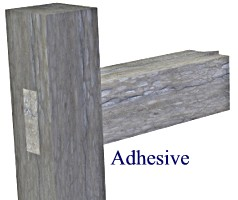 |
What about ancient glue? The rising interest in renewable resources has brought some of the old adhesives into the spotlight. Adhesives made from lignon, soy protein, tannin, caseins and animal blood are used today for manufacture of plywood and particle board, doors etc. Since Noah is working with a lot of timber, storing large amounts of grain and killing large quantities of animals for waterskins and leather, he has all the ingredients he could need to produce a variety of adhesives. Furthermore, he was instructed to coat the ark (inside and out) with a substance translated as "pitch". This might well have been a good adhesive also.
|
Efficiency of a Glued mortise and tenon joint statically loaded in tension. This is quite a simple calculation, however adhesives are notoriously fickle and require good quality control. Area of glued joint = 2 * (300 +100) * 300 = 240e3mm2 The tensile capacity of beam is limited by the tenon = 774 / 3 = 258kN. So the glue would need to handle a shear stress = 258e3 / 240e3 = 1MPa With modern adhesives and a precision joint this is readily achievable, giving a joint efficiency as high as 33%. However a poor fitting joint would lower this considerably. The use of wedges into the tenon would help to give a tight joint. A more realistic figure might be around 10% which represents 0.3MPa average adhesive bond strength. (Appendix 4) |
Obviously dowels and glue should be combined. However the glue bond would most likely break before the dowels begin to take much load - so you can't just add the two load efficiencies together. Where adhesives would perform exceptionally well is in conjunction with layered planking. (See Planks or Beams?)
| There are many examples of
interlocking joints used in ancient structures. The problem is that so much of the
cross-section is taken up with the joint socket.
A joint between 2 members is unlikely to approach 50% of the beam strength. If 3 or 4 members are involved, then this method gets quickly out of hand. A true space frame can have 8 to 18! |
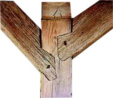 |
Perhaps the only way to get close to 100% load capacity in a timber joint is to use metal reinforcing. A surprisingly large amount of metal would be involved however, hundreds of tonnes to complete the ark frame. Feasible but pretty serious.
The big advantage of this method is that it suits complex spatial joints typical of a space frame structure. If the large logs were to take significant wave induced loading, they would need to form a rigid structure throughout the vessel. Such a structure resembles a space frame.
The following image suggests fully dressed timbers but for internal framing flat surfaces would only be required near the joint. However, there is no way to avoid extensive timber processing in the hull walls.
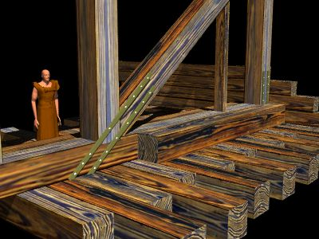
|
Calculations for metal reinforced joint. Assume Noah used bronze. This ancient metal is identified in Cain's descendent Tubal-Cain. (He also worked "forged iron", as distinct from cast iron which has too much carbon to forge into tools: Gen 4:22). So they could obviously achieve the temperature required for bronze smelting (Copper melts at 1083oC). Most fuels can produce this temperature, even a candle flame is 1400oC - light yellow. For example, a timber stoked pottery kiln was without bellows reached 940oC in a Roman kiln reconstruction. The issue is to supply heat to a furnace faster than it escapes, and concentrate the heat to where it is needed. Take bronze yield stress of 100MPa. (Appendix 5) The 300mm beam in tension can handle 774kN; Cross-sectional area of bronze: Area = Load / Stress = 774e3 / 100 = 7.745e3mm2 Which, for a 25mm deep section is equal to 300mm width, or four straps of 25 x 75mm. To fix these straps, spikes would be used along their length, equal to an area of at least 10e3mm2. (20 spikes of 25mm diameter, or 5 spikes per strap - each side) Ignoring the area reduction by assuming the strap is fully hand forged around the holes. This is obviously a serious undertaking, but represents a joint that is equal to the strength of the timber in tension. How much bronze? Each strap would be about 2.5m long, so volume = length*area = 2.5 * 7.745e-3 = 1.94e-2 m3 Hence mass = density * volume = 8750 * 1.94e-2 = 170kg (4 straps of 42kg each). The straps could also be tapered over the length of the spike area saving around 25%. So assume 150kg per joint, over hundreds of joints. |
CONCLUSION
There are many ways to join large timbers, but the complexity of a truss limits the options. For structural calculations where large tensile forces are likely to occur, a metal reinforced joint appears to be the only choice. When a ship experiences hogging and sagging loads as a wave passes along the hull, many longitudinal truss elements would oscillate between tensile and compressive loading.
Analysis based on member properties (the strength of a beam) assumes the joint is capable of transferring the load - pointing to the metal reinforced joint. In practice, the metal joint would be selected for the most critical joints which would be longitudinal truss elements amidships. The beams would also be made as large as possible to minimize the number of joints. Joints that are under permanent compressive loading can be treated far more simply, but with increasing wave size such joints become harder to find.
It is not surprising that the most effective way to join timber resembles the modern roof truss connection - metal reinforcement and lots of nails.
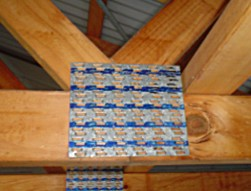
Bolts are threaded fasteners. The thread does appear is certain Roman instruments and as a worm drive in Roman surveying equipment. There is also the famous Archimedes screw of 250BC - which was a type of water pump.
Wooden screws were used for wine presses, and metal screws were probably cut and filed by hand - not easy for the nut. So the Dark Ages saw the use of nails instead. By 1480 threaded screws were commonly used in the assembly of clocks. Leonardo da Vinci (1452-1519) had designs for screw thread cutting machinery in his notebooks. Somewhere around 1568 the French mathematician Jacques Besson invented the first useable screw cutting lathe, however; many continued making metal screws by hand for another century. During the 16th century firearms and assembly concepts brought the metal screw closer to mass production which actually occurred during the Industrial Revolution in 1765. It was the lead-screw of the engine lathe that really made screw threads universal. Of course, how they made they first good lead-screw is a fun topic.
http://www.hayesbolt.com/news%2C_seminars%2C_events.htm
APPENDIX 2: Timber Properties (References)
Typical design stresses - Civilian and Military. http://www.globalsecurity.org/military/library/policy/army/fm/3-34-343/appc.htm
Experimental Douglas fir shear data: http://www.fpl.fs.fed.us/documnts/fplrp/fplrp553.pdf (Table 6)
Experimental Douglas fir tensile data: http://www.fpl.fs.fed.us/documnts/fplrp/fplrp497.pdf (Figure 9, 5000PSI)
Overview of timber properties http://www.fs.fed.us/na/wit/pdf/timberbridgespub/WIT-02-0001.ch3.pdf
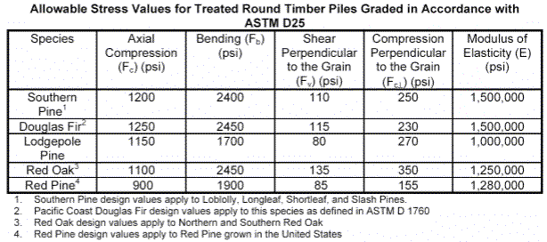
Note: "Shear Perpendicular to Grain" is rare data since it is not measured by standard tests. Timber is certainly quite strong in perpendicular shear so the low values here might refer to "Rolling shear" which is the other "perpendicular". However, this would not be particularly relevant to pile design. The Red Oak figure (135 psi / 1 MPa) for mortise pins is almost the only data available at present. (Pretty easy to measure though - just throw some wood into a double shear test jig). http://www.preservedwood.com/pil/timber_manual/timber_manual.pdf
|
TIMBER PROPERTY COMPARISON Building Timbers - Technical Pamphlet No 1 - Queensland Forest Service 1991 |
||||
| PROPERTY | REF | NORTH AMERICAN Douglas Fir (Coastal) |
TEAK Tectona grandis |
SPOTTED GUM Coryumbia citrodora |
| DENSITY AT 12% MOISTURE KG/M3 | 1 | 560 | 670 | 1010 |
| DURABILITY CLASS (IN GROUND CONTACT EXPECTED LIFE) |
1 | 4 (1 TO 8 YRS) |
2 (15-25 YRS) |
2 (15-25 YRS) |
| JOINT GROUP | 1 | J4 (LOW) | J3 | J1 (HIGH) |
| STRESS GRADE AT STRUCTURAL 2 | 2 | F8 | F7 | F17 |
| BASIC WORKING STRESS PROPERTIES | ||||
| BENDING STRESS (F'b) | 2 | 8.6 MPa | 6.9 | 17.0 MPa |
| MODULUS OF ELASTICITY (E) | 2 | 9100 MPa | 7900 | 14000 MPa |
| TENSION STRESS PARALLEL (F't) | 2 | 5.2 MPa | 4.1 | 10.2 MPa |
| COMPRESSION STRESS PARALLEL (F'c) | 2 | 6.6 MPa | 5.2 | 13.0 MPa |
| COMPRESSION PERP. TO GRAIN (F'p) | 2 |
2.6 MPa |
2.1 | 5.2 MPa |
APPENDIX
3: Timber
Properties (References)
Factored Tensile Resistance of
"Stavebolt (standard model)"
(steel pipe: 48.3 mm diameter and 279.4 mm Length) http://stavehouse.com/stavebolt/index.html
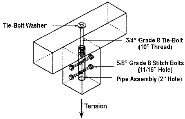
| Wood species |
|
|||||
|---|---|---|---|---|---|---|
| Tie-bolt
washer 51 mm diameter 4 mm thick |
Tie-bolt
washer 76 mm diameter 6 mm thick |
Tie-bolt
washer (1) 102 mm diameter 9.5 mm thick |
||||
| Standard term load |
Short term load |
Standard term load |
Short term load |
Standard term load |
Short term load |
|
| White
Pine (Northern Species) |
4.7 | 5.4 | 11.7 | 13.5 | 20.9 | 24.0 |
| Spruce - pine - fir |
7.1 | 8.2 | 17.8 | 20.4 | 31.6 | 36.4 |
| |
7.8 | 9.0 | 19.4 | 22.4 | 34.6 | 39.8 |
| Douglas-fir |
9.4 | 10.8 | 23.5 | 27.0 | 41.8 | 48.1 |
| * | Factored tensile resistance is calculated in accordance with CSA O86.1-94, "Engineered Design in Wood (Limit States Design)", considering dry service conditions and no fire retardant treatment. |
| ** | Standard term loading includes dead plus snow or use and occupancy loading. Short term loading includes wind and earthquake loads. |
| (1) | The 102 mm diameter heavy duty plate washer must be installed with two (2) cut washers under the nut. |
APPENDIX 4: Adhesives (References)
Bonding anchors to concrete (11 to 21 MPa): http://www.dot.state.fl.us/specificationsoffice/January04WB/D9370000.do.pdf
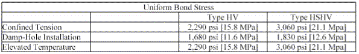
Cellulose based adhesive gives stresses up to 3.5MPa: http://oasys2.confex.com/acs/225nm/techprogram/P565750.HTM
PVA type adhesives (7 to 15 MPa) http://www.emeraldinsight.com/pdfs/prt2.pdf. Note that 15MPa represents timber failure. (100% of test samples)
Internal bond of craftwood (MDF) is around 1MPa: http://www.thelaminexgroup.com.au/downloads/trade_essentials/TradeGuide_Craftwood.pdf
Renewable resource adhesives in industry: Animal blood, lignon, soy protein, tannin, caseins
APPENDIX 5: Metals (References)
Modern Casting Bronze. Cu / Sn / Pb
Casting Tin-Bronze gives around 170MPa yield strength, and is 84% copper and 16% tin. ( www.matweb.com : UNS C91100 Copper Casting Alloy). Recommended for investment casting, sand casting etc, for items such as piston rings, bearings, bushings, bridge plates. Not heat treatable, so it wouldn't be affected by manufacturing variations. Elongation is 2%, so this is brittle.
Adding more Tin (to 20%) increases the strength (200MPa) but makes it more brittle. Adding Lead and reducing Tin will improve the ductility, but reduce yield strength.
Ancient Bronze Cu / Sn / Pb
"Greek and Roman statues were analyzed, the copper content in twenty-six objects ranged from 70-80% and it ranged from 80-90% in another twenty objects. Over two-thirds of the objects had a tin content ranging from 5-10%. The lead content for nearly two-thirds of the bronzes tested ranged from 10-20%, but all of the objects had some lead." http://www.unc.edu/courses/rometech/public/content/arts_and_crafts/Sara_Malone/BRONZE_2.html This would be quite ductile and the expected yield stress would be around 100MPa.
Furnaces
Simple, home-made furnaces fired with oil or gas are capable of melting bronze and even steel. For example: http://www.artmetal.com/project/TOC/proces/cast/ag_cast.html
Roman pottery kiln reconstruction: (940oC): http://members1.chello.nl/~a.hendriks01/kiln.htm